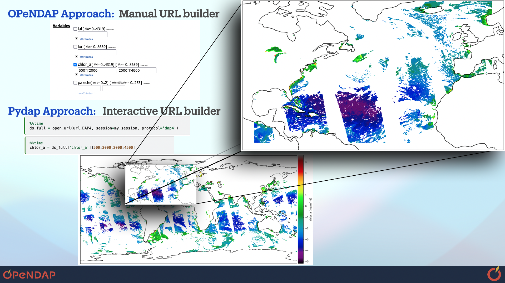

Leer en Español | Read in English
Bienvenido a Pydap#
Pydap es un paquete de python que implementa el protocolo DAP (Data Access Protocol por sus siglas en ingles), tambien conocido como OPeNDAP. Uno puede usar pydap como cliente de acceso a miles archivos de informacion cientifica en servidores de OPeNDAP de una manera segura, transparente, y efficiente por el internet, o puede tambien utilizar pydap como su propio servidor para hacer que sus archivos de informacion cientifica puedas ser accedidos por el internet.
¿Porque OPeNDAP?#
El acceso abierto equitativo a datos cientificos sigue siendo esencial para el avance de los marcos de “Ciencia Abierta”, pues permite asi el descubrimiento cientifico basado en evidencia factual por medio de datos, y fomenta una educación científica inclusiva. A nivel institucional, los servidores OPeNDAP representan una solución gratuita y de código abierto para habilitar el acceso a datos como una alternativa a la nube comercial. OPeNDAP tambien ofrece una opción rentable cuando los datos ya se encuentran almacenados en la nube en formatos de archivo que nunca fueron disenados para el computo de nube, o cuando las colecciones archivos son demasiado grandes para ser reformateadas.
Para investigadores, educadores y ciudadanos, OPeNDAP permite compartir datos científicos de forma libre utilizando protocolos reconocidos por la comunidad cientifica, haciendo que los datos sean publicables, citables y fácilmente localizables. Además, los usuarios pueden acceder los datos de manera eficiente, descargando solo la subregión de interés or el archivo completo.
Los usuarios principiantes de OPeNDAP, sin embargo, usualmente tienen que invertir tiempo para comprender mejor los protocolos y elementos de OPeNDAP. Algunos de los elementos de OPeNDAP que mas requieren estudio y comprension por parte del usuario para aprovechar mejor OPeNDAP son:
Expressiones de Restriccion (Constraint Expressions en ingles).
La codificacion de los URL para la transmision efficiente de datos atraves de la web.
Diferencias entre las versiones DAP2 y DAP4 del protocolo de OPeNDAP.
¿Porque Pydap?#
 |
|---|
Figure 1. Comparacion entre dos maneras de descargar una subregion de archivo cientifico remoto en un servidor de OPeNDAP. En este ejemplo, la cobertura de los datos dentro del archivo remoto es global, y el usuario de pydap descarga solamente la region de interes al indexar el arreglo numerico de pydap. La mandera comun de OPeNDAP es por medio del |
Pydap permite el acceso de informacion cientifica disponible en servidores de OPeNDAP de una manera pythonica, interactiva y exploratoria. En breve, pydap:
Construye la Expresion de Restriccion (Constraint Expression) al indexar el arreglo de pydap como si fuera un arreglo numerico (For ejemplo, vea la Figura 1).
Codifica los parameteros del URL para asi asegurar la transmision de datos cientificos a traves del internet.
Descarga la informacion en formato binario del tipo DAP2 (
.dods) y DAP4 (.dap), proveniente de servidores de OPeNDAP, convirtiendolos un arreglo numerico de numpy.Cubre el protocolo DAP2 y (la mayoria) del DAP4.
Note
Conocimiento y dominio de como construir las Expresiones de Restriccion (Constraint Expressions) continua siendo importante, ya que se pueden utilizar para mejorar el rendimiento de pydap.
Lo que Pydap no es#
Pydap una libreria en python bastante sencilla, y por ende ofrece muy poco paralelismp, modulos de manipulacion, o visualizacion. Librarias pueden, sin embargo, ser utilizadas como por ejemplo xarray, Dask / Coiled, y matplotlib.
Pydap continua en desarrolo! Para ver las mas recientes contribuciones, navega a la seccion Lo Nuevo. Si te gustaria contribuir a este proyecto, navega hacia Github para ver una lista de posibles contribuciones. Pydap es open-source, y nos gustaria crecer la base de aplicaciones y contribuidores al proyecto, aunque sea con un tutorial en la documentacion.
En seguida esta el Contenido de la Documentacion para apprender mas sobre pydap, y las mejores practicas para acceder a informacion cientifica de servidores de OPeNDAP.
Quickstart